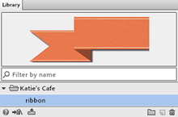
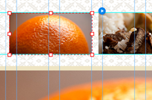
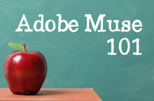
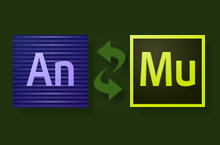
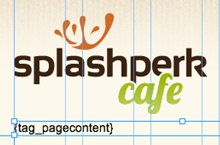
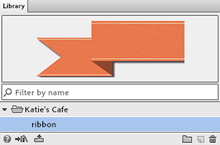
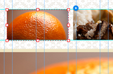
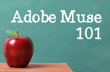
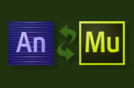
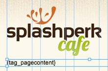

Adobe Muse
Upcoming Live Events
Muse Jam: Recreate a Website with Muse in 60 Minutes or Less
Have an existing site built with a traditional coding app that you'd like to recreate in Muse? How about a template from a CMS provider like Wordpress, Joomla or Business Catalyst? In this session we'll show you how you can quickly re-create a live website by extracting graphic elements, inspecting typographic styles, and building them out in Adobe Muse -- all in 60 minutes or less. After the presentation we'll open the floor to any questions you might with the application.
Muse Jam: Design for Mobile Devices with Adobe Muse
PLEASE NOTE: Session begins 1 hour later to accommodate the HOW DesignCast.
Join Adobe Muse Principal Product Manager Dani Beaumont as she shows you how to create tablet and smartphone versions of your desktop site so you can deliver engaging, relevant experiences whether the site is viewed on a large monitor while sitting at a desk, or on a small screen while on-the-go.
Past Recordings
›
Muse Jam: Scroll Effect Enhancements
Scroll effects can make your sites more engaging with page elements that move in different directions at different speeds with the scroll of a mouse, or touch of a finger on a smartphone or tablet. Join Adobe Muse Group Product Manager Dani Beaumont as she introduces you to scroll effect improvements in the November release including Scroll Motion, Opacity, Slideshow and Edge Animations, followed by a quick review of sample files and tutorials available to help you get started.
Muse Jam: Taking Advantage of the Library Panel and Exchange
The newly released Library Panel lets you organize, reuse, and share design elements easily. Couple this with the Muse Exchange for sharing your collection with the community or downloading what others share and you have an incredibly useful productivity tool. Join Muse Product Manager Dani Beaumont as she takes you through the new feature implementation.
Muse Jam: Understanding Scroll Effects
Join Dani Beaumont, Adobe Muse Product Manager, as she demonstrates how you can create engaging scroll motion effects with just a few mouse clicks, followed by specific examples of scroll motion sites created by Muse designers in the community.
Muse Jam: Preparing Assets for Muse
Adobe Muse allows you to import a wide variety of raster file types -- psd, png, gif, jpg, oam -- but how do you know which format is best to use? In this session we'll discuss when to apply specific file formats and export options so that your Muse site both looks terrific and loads quickly across a variety of browsers. We'll also take a closer look at importing Photoshop layers, and working with the new Photoshop Generator tool.
Muse Jam: Well-Planned Site Navigation
In the world of website design a well-planned navigation system can be the most important consideration. Without good, usable navigation, viewers may get confused, not be able to find what they need, or just abandon the website entirely. In this Muse Jam session we'll share examples of well-executed navigation across desktop, tablet and smartphone layouts. After the presentation we'll open the floor to any questions you might have with the tool.
Muse Jam: Adobe Muse 101 — Building a Website from Scratch
Adobe Muse is quickly becoming a sophisticated web design application. Let's slow things down for a bit, and swing back to the basics of building your first website with the application. In this session we'll take you all the way from File > New to publishing your first simple trial site. After the presentation we'll open the floor to any questions you might have with the tool.
Muse Jam: Adding Edge Animate Content to Muse
Muse Jam: Adding Edge Animate Content to Muse / Recorded August 8 / Watch now ›
Are you working with both Edge Animate and Adobe Muse to build out interactive web sites? Join Sarah Hunt, Adobe Edge Animate Product Manager, as we share tips and tricks around creating and integrating interactive content for the web. This will also be a terrific opportunity to share with Sarah your top feature requests for the product going forward.
Muse Jam: Preparing Assets for Muse
The Muse application allows you to import a wide variety of raster file types -- psd, png, gif, jpg -- but how do you know which format is best to use? How about importing vector content from say Illustrator or Fireworks? In this session we'll discuss when to apply specific file formats and export options so that your Muse site both looks terrific and loads quickly across a variety of browsers.
Muse Jam: Advanced CMS with Business Catalyst
In this week's Jam session Christopher Kellett of museGrid.com and Dani Beaumont will break down the process of integrating dynamic data features from the Adobe Business Catalyst Content Management System (CMS) into a published Muse site. The workflow will include inserting modules into your Muse design, changing site layouts quickly and easily, and customizing the integrated design by editing global CSS style sheets. Familiarity with Muse and Business Catalyst highly recommended.
 








